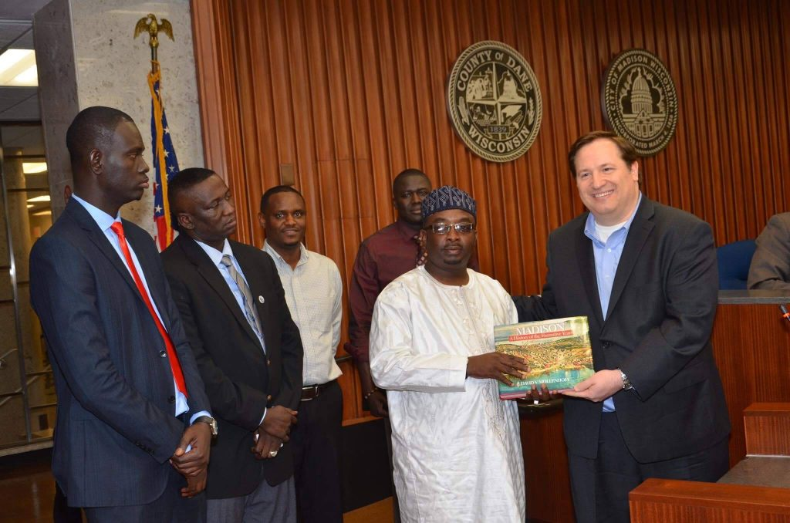

Mission
To build, develop and sustain strong global relations, deeper understanding, partnerships and exchanges — culturally enriching the lives of citizens in both cities and empowering communities to pursue projects for mutual benefit.

Madison's first sister city partnership in Africa — connecting neighbors across an ocean through education, health, culture and economic opportunity.

In April 2015, after volunteers knocked on nearly 4,000 doors through a hard Wisconsin winter, Samba Baldeh became the first African-born member of the Madison Common Council. Soon after, Mayor Paul Soglin asked him to help establish the city's first sister city relationship on the African continent.
A group of dedicated community members answered the call. Working with the City of Madison's Sister City Collaboration Committee, they selected the Kanifing Municipal Council in The Gambia and agreed on protocols for cooperation in education, health, culture and the environment.
Read our full storyTo build, develop and sustain strong global relations, deeper understanding, partnerships and exchanges — culturally enriching the lives of citizens in both cities and empowering communities to pursue projects for mutual benefit.
To serve as a community resource for cultural exchange between Madison and Kanifing, fostering mutual learning, respect and humanitarian support while highlighting the rich cultures and lived experiences of both cities.
To initiate and support community-driven projects that promote business development, small businesses, housing and economic growth — enhancing quality of life in the communities we serve.
We promote collaboration and capacity building across five sectors that matter to both communities.
Academic exchanges, scholarships, school-supply drives, literacy campaigns and teacher training from elementary through university.
Shipping medical supplies and equipment to Gambian hospitals and supporting future healthcare professionals.
Heritage and art fairs, music showcases, film screenings and exchanges that celebrate the rich cultural life of both cities.

Supporting Gambian high school students pursuing higher education in the healthcare field.
Learn more
A historic foreign direct investment mission to The Gambia and Nigeria with the Wisconsin Economic Development Corporation.
Read more
Our container of medical equipment arrived safely and is being distributed to hospitals across the region.
Read moreWe are grateful to the organizations that make this partnership possible.
Volunteer your time, join a committee, or support our programs in Madison and Kanifing.